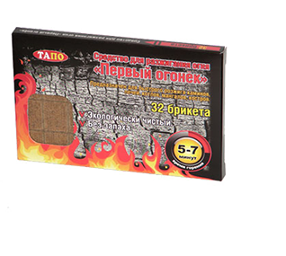

Для печек

Для обогревательных катлов

Для печей, плит

Для каминов

Для грилей

Для костров

Каждый помнит, сколько времени и терпения требуется, чтобы развести огонь. Кипа газет, щепки и немало стараний понадобится нам, пока в очаге наконец разгорится твердое топливо (дрова, древесный уголь, каменный уголь, брикеты, торф). Легко и быстро загорающиеся сильным пламенем и горящие в течение течение 5-7 минут средство для розжига огня "Первый огонек" позволит без лишних усилий разжечь огонь в камине, печке, гриле, костре и любом другом месте. С помощью "разжигателей огня" вы без труда разожжете огонь и в сырую ветряную погоду, и даже в случае их намокания.
Первый огонёк представляет собой брикеты, изготовленные из природных экологически чистых материалов, а именно – прессованных древесных опилок. Средство не имеет запаха и является экологически чистым продуктом.
Для печек
Для обогревательных катлов
Для печей, плит
Для каминов
Для грилей
Для костров